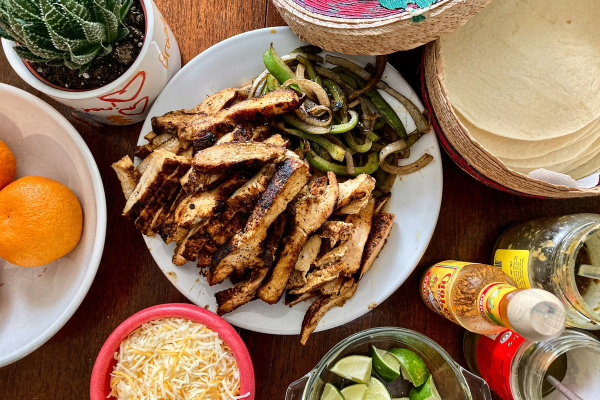

Sheet-Pan Fajitas (Chicken and Tofu)
Chicken on one pan, tofu with mushrooms and zucchini on the other. The vegetarian pan is dairy-free and has no peppers.

Representative photo by Thomas Park on Unsplash
Serves 4 servings
Prep
Cook
Total
Ingredients
Seasoning, for both pans
- 2 tsp chili powder
- 2 tsp ground cumin
- 1 tsp smoked paprika
- 1 tsp garlic powder
- 1/2 tsp dried oregano
- 1 tsp salt
- 3 tbsp avocado oil
- 3 limes
Meat pan
- 1 lb boneless skinless chicken thighs, cut in strips
- 1 bell pepper, sliced
- 1 onion, sliced
Vegetarian pan
- 1 block (14 to 16 oz) extra-firm tofu, in bite-size pieces
- 8 oz cremini mushrooms, sliced
- 1 zucchini, cut in half-moons
Sides
- 12 oz frozen riced cauliflower
- 1 can (15 oz) black beans
- 1 bunch cilantro
- guacamole
- salsa
Steps
- Heat the oven to 425°F. Whisk the chili powder, cumin, smoked paprika, garlic powder, oregano, salt, avocado oil, and the juice of 2 limes together.
- Meat pan: toss the chicken, bell pepper, and half the onion with half the seasoning mixture on one sheet pan.
- Vegetarian pan: toss the tofu, mushrooms, zucchini, and the rest of the onion with the remaining seasoning mixture on a second sheet pan.
- Roast both pans 20 to 25 minutes, stirring once, until the chicken reaches 165°F and the tofu browns at the edges.
- Meanwhile, sauté the riced cauliflower in a little oil for 5 to 6 minutes. Finish with lime juice, chopped cilantro, and salt.
- Warm the black beans with 1/2 tsp cumin and a splash of water.
- Serve as bowls or in low-carb tortillas with guacamole and salsa. Sour cream and cheese go on the meat side only.
Soyrizo option: skip the tofu, roast the vegetables alone, and crumble half a package of soyrizo into a skillet for 5 minutes. It is already seasoned.